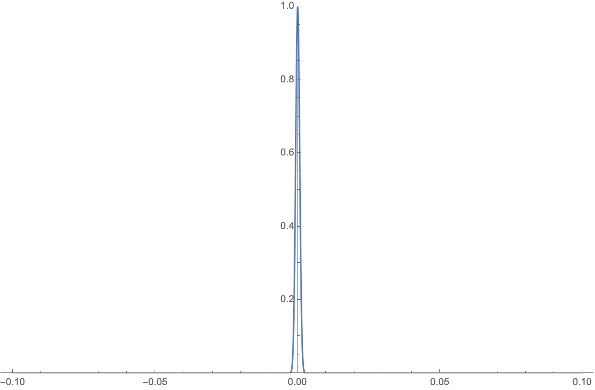

Introduction

The concept of temperature has always been confusing to me. On the one hand, we have statistical mechanics that defines the temperature by \(\frac{1}{T} = \left.\frac{\partial S}{\partial E} \right|_{V,N}\) (or \(T = \left.\frac{\partial E}{\partial S} \right|_{V,N}\)). On the other hand, we have our everyday experience of temperature scales. We obviously don’t measure the entropy of everything and do the partial derivative with respect to their energy to get their temperature. Instead we mark the temperature directly from a thermometer. How are they connected? How is that abstract temperature formula related to how we measure temperature in our everyday life?
What on earth is temperature?
In Brief
Temperature from Statistical Mechanics
Microstates and the principle of equal a priori probabilities
To understand temperature from statistical mechanics, we need the concepts of macro-state and micro-state. A system in thermodynamic equilibrium is said to be in a macrostate, whose characteristics such as energy, volume, pressure, and temperature are stable and can be directly measured. A macrostate is composed of many microstates which describe the detailed states of all particles in the system and are constantly transitioning into each other.
The analysis of statistical mechanics starts from the assumption that a system that has reached equilibrium is equally likely to be found in any of its accessible microstates. We call this the “principle of equal apriori probabilities”, the justification (not a complete proof) for which can be found here using the H theorem. For now, we take it as a given and know that statistical mechanics built on this assumption has worked remarkably well.
The most likely macrostate under thermal equilibrium
Let’s imagine putting two systems \(1\) and \(2\) next to each other so that they can exchange energies. What the equal probability principle tells us is that when systems \(1\) and \(2\) reach equilibrium, the probability of what macroscopic states these two are in is proportional to the number of corresponding microscopic states there are for the combined system. Systems 1 and 2 are going to spend most of the time in macrostates that had lots of corresponding microstates.
Let’s denote the number of microstates for a macrostate of \(N\) particles, with volume \(V\) and internal energy \(E\) as \(\Omega(N, V, E)\). Then the number of microstates when A and B are together is
\[\Omega(N, V, E) = \sum_{E_1}\Omega_{1}(N_1, V_1, E_1)\Omega_{2}(N_2, V_2, E-E_1), \]
summing over all possible values of \(E_1\le E\). In this case, there’s no exchange of particles and no change of volume, so \(N_1\), \(N_2\), \(V_1\) and \(V_2\) are all fixed. (For people that have studied Thermodynamics, you may recognize that we are using Microcanonical Ensembles here.)
The probability of a macrostate where system \(1\) has energy \(E_1\) and system \(2\) has energy \(E-E_1\) is therefore
\[p(E_1) = \Omega_{1}(N_1, V_1, E_1)\Omega_{2}(N_2, V_2, E-E_1)/\Omega(N, V, E).\]
We will prove in Apendex I that the most likely macrostate dominates the probability distribution, and therefore the equilibrium states are very well represented by the energy distribution with the maximum probability.
Let’s take a look at this maximum probability state. When \(p\) reaches the maximum, the the first order derivative vanishes:
\[\left.\frac{\partial \Omega_1}{\partial E_1}\right|_{N_1, V_1} \Omega_2 dE_1 + \left.\frac{\partial \Omega_2}{\partial E_2}\right|_{N_2, V_2} \Omega_1 dE_2 =0\]
Because \(dE_2=-dE_1\), we obtain
\[\left.\frac{\partial\log \Omega_1}{\partial E_1}\right|_{N_1, V_1} = \left.\frac{\partial\log \Omega_2}{\partial E_2}\right|_{N_2, V_2} .\]
We conclude that when thermal equilibrium is reached, the quantity \(\frac{\partial\log \Omega}{\partial E}\) in systems 1 and 2 become equal. If this quantity in these two systems is not equal, then they haven’t reached equilibrium yet.
Obviously, this quantity is connected to our everyday concept of “temperature”. How is it connected to temperature? We don’t know yet. For now, we will just note that it’s a function of temperature \(T\):
\[f(T)=\left.\frac{\partial\log \Omega}{\partial E} \right|_{N, V} = \left.\frac{\partial\bar{S}}{\partial E}\right|_{N, V},\]
where for convenience, I introduced the notation for “entropy”
\[\bar{S}\equiv\log \Omega.\]
(For our purpose in this post, we don’t have to get too deep into the meaning of “entropy”. Here we will merely take it as a mathematical expression.)
We see that that the partial derivative of entropy with respect to energy, when the number of particles and the volume are fixed, is a function of temperature. That’s all statistical mechanics can tell us. It leaves plenty of room for how one can define temperature. Even though not required for the following derivation, as an exercise, the reader can further determine that the function should decrease in value when temperature increases, using the fact that we are looking at a maximum here, where the second derivative is negative.
To connect this statistical mechanics concept of temperature to the concept of temperature used in our daily lives, we need to first take a detour and have a look at how the temperature was defined historically before thermodynamics.
Empirical Temperature Definition
It was discovered that different gases kept under very low constant pressure, when started at the same volume and the same temperature, expands to the same volume when the temperature changes (experimentally, we can make sure that temperatures are the same by putting the two gases in contact with the same heat reservoir). Temperature can therefore be taken as a quantity that increases linearly with the volume occupied by the gas: \(T\propto V\).
{% include image.html file=“https://upload.wikimedia.org/wikipedia/commons/e/e4/Charles_and_Gay-Lussac%27s_Law_animated.gif” caption=” If we mark the temperature scales proportional to the volumes’ scales, we get a basic gas thermometer.” %}
People also discovered that when the volume is kept constant, the pressure increases linearly with the temperature: \(P \propto T\); when the temperature is kept constant, the pressure is inversely proportional to the volume: \(P \propto 1/V\); and the volume of gas is proportional to the amount of gas: \(V \propto N\).
Combining all these observations, we get the combined gas law in a general form:
\[PV=kNT+c\]
Note that \(k\) and \(c\) are up to how we define the temperature scale:
We have the freedom to define the unit of temperature, i.e. how much one degree means. This affects the slope \(k\).
We have the freedom to define the starting point of temperature, i.e. where temperature 0 lies. This affects the constant \(c\).
Historically, people have defined the temperature scale in such a way that the difference between the boiling point and the triple point of water at one atmosphere of pressure is equal to 100. This defines the “degree” and determines the Boltzmann constant \(k=8.31 J⋅K^{−1}⋅mol^{−1}\).
To remove the constant in the equation, so that when the temperature reaches 0, it corresponds to \(P=0\) or \(V=0\), the “absolute zero” temperature can be defined in the following way:
If the triple point of water under the pressure of 1 atmosphere is \(T_1\), then the “zero temperature” \(T_0\) can be obtained by \(PV=kN(T_1-T_0)\), where \(P\) and \(V\) are the pressure and volume of an ideal gas at \(T_1\). This gives us the temperature difference between the freezing point of water and the “absolute zero” in the “degree” units, which comes out to be around \(273.16\) degrees. We then shift the temperature scales, so that the freezing point of water is at about \(273.16\) degrees and the “absolute zero” is at \(0\) degrees. This gives us the Kevin Temperature Scale.
With these two definitions, we’ve fixed our ideal gas equation:
\[PV = kNT\]
where \(k=8.31 J⋅K^{−1}⋅mol^{−1}\).
Next, we want to connect this empirically defined temperature back to our temperature concept from statistical mechanics.
Connecting the Statistical Temperature with the Empirical Temperature
Formula for pressure
To connect the two, we need to derive the ideal gas equation from statistical mechanics. And in order to do that, we need to know how pressure is connected to the concept of entropy.
From the previous section on statistical mechanics, we see that the change of entropy contributes to the change of energy: \(dE = f(T)d\bar{S}\) when \(V\) and \(N\) are fixed. This is the heat exchange discussed in that section. We also know that when volume changes, pressure does work and contributes to the energy of the system, if there’s no heat exchange: \(dE=PdV\).
Combining them, we have
\[dE = PdV + f(T)d\bar{S}.\]
Therefore, the pressure can be obtained through entropy in the following way
\[P = \left. f(T)\frac{\partial \bar{S}}{\partial V} \right|_{N, E}\]
Determine the temperature function
I will skip the derivation, which can be found in other textbooks. The number of microstates for an ideal gas at a constant energy \(E\) is 1
\[\Omega(E) = V^N \left(\frac{3N}{2E}\right)\pi^{3N/2}(2mE)^{3N/2}/(3N/2)!\]
Therefore
\[P=f(T)\left.\frac{\partial \bar{S}}{\partial V} \right|_{N, E} = f(T)\frac{N}{V}\]
Comparing this to the ideal gas equation, we then have
\[f(T) = kT.\]
At this point, we can plug this back into the relationship between entropy and energy to obtain
\[\frac{1}{T} = \left.k\frac{\partial\bar{S}}{\partial E}\right|_{N, V}= \left.\frac{\partial S}{\partial E}\right|_{N, V},\]
where we’ve also used the official definition of entropy which absorbs Boltzmann constant \(k\)
\[S=k\bar{S} = k\log \Omega.\]
The statistical mechanics’ definition of temperature that matches up with our historical empirical definition of temperature is therefore
\[\frac{1}{T} = \left.\frac{\partial S}{\partial E}\right|_{N, V}\]
or
\[T = \left.\frac{\partial E}{\partial S}\right|_{N, V}.\]
Temperature Scale
Problem with the old temperature scale
We obtained the statistical mechanics’ definition of temperature by connecting statistical mechanics equations to the empirical definition of temperature. This constrains the degree of freedom allowed by statistical mechanics and gives us a clear definition.
However, the constant \(k\) now absorbed in the entropy \(S\) comes from the definition of a degree, which has to be determined by experiments first.
Originally, a degree is defined by dividing the temperature differences between the boiling point and the triple point of water. This requires two experimental measurements at two temperatures. To simplify this a little, we can define the temperature scale as the temperature of the triple point of water divided by \(273.16\).
This removes one of the measurements required since the absolute zero is theoretically simple from statistical mechanics, and fixes the temperature of the triple point to be exactly \(T=273.16 K\). We now only need to measure the \(P\), \(V\) and \(N\) in order to figure out the value of \(k\). If we are using gas, and it can be approximated as an ideal gas, then we can use the formula \(PV=NkT\) to determine the value of \(k\).
Other substances can be used for this measurement too. The general principle here is to use certain model systems that are sufficiently simple so that one can calculate its entropy as a function of the energy, \(S=S(E)\), and derive the formula for its temperature. We then measure related quantities of the system to determine the value of \(k\).
Notice that this requires a simple model system that’s calculable and a real system that’s close enough to the theoretical model system for precise measurements. This makes it very hard to determine the value of \(k\) to high precision.
In fact, because of this approach, the Boltzmann constant \(k\) was one of the least accurately known fundamental constants.
Re-define the temperature scale
In 2019, the definition of temperature scale has been revised to fix this problem. Instead, we fix the value of \(k\) first and then use the temperature equation from statistical mechanics to define our temperature scale. This way, the Boltzmann constant can be defined exactly by other physical constants. For more details, please see redefinition of Boltzmann’s constant and its impacts on the definition of 1 Kevin.
The most general meaning of temperature
Now that we switched to using statistical mechanics as the first principle for defining temperature scales, this means, the most general interpretation of temperature is that it’s the derivative of exchanged heat with respect to the entropy, i.e. the quantity that becomes equal under thermal equilibrium. Only in special situations, such as with the ideal gas, the temperature represents the average kinetic energy of atoms in the gas, because there the temperature is proportional to the average energy. But this is not always the case for other more complicated systems.
Thermometers
How is the temperature scale connected to the thermometers we use in our daily lives?
Because we now use the statistical mechanics’ definition of temperature as the official definition of temperature scales, in theory, all thermometers need to be calibrated to be consistent with the \(T=\left.\partial E /\partial S \right|_{N, V}\) formula. However, the entropies for most systems are too complicated to calculate.
Ideally, we should use model systems that are calculable as our primary thermometers. Ideal gas, black body radiation, and spin paramagnetism are the three most important model systems that can be used as primary thermometers 2. In practice, we use systems that are very close to these ideal systems as our primary thermometers.
We then use these primary thermometers to calibrate secondary thermometers, which include most of the thermometers we use in our daily lives.
Appendix
I. why do we only focus on the most likely scenario?
One can prove that the entropy of a combined system equals the sum of its parts:
\[\bar{S} = \log \Omega = \log \Omega_1 \Omega_2 = \log \Omega_1 + \log \Omega_2 = \bar{S}_1 + \bar{S}_2,\]
Therefore, entropy is an extensive quantity, proportional to the size of the system: \(\bar{S} \propto N\), just as \(U \propto N\).
Now we can use this to prove that the probability drops dramatically when the energy distribution between systems 1 and 2 differ slightly from the most likely energy distribution.
We Talyor expand the numerator in probability \(p\) around the maximum \(U_1=U_1^{*}\):
\[ \begin{aligned} \Omega_1(U_1)\Omega_2(U-U_1)&=\exp(\bar{S}_1(U_1) + \bar{S}_2(U-U_1)) \\ &\approx \exp\left(\bar{S}_1(U_1^{*}) + \frac{1}{2} (U_1-U_1^*)^2 \frac{\partial^2 \bar{S}_1}{\partial U_1^2} + \bar{S}_2(U-U_1^{*}) + \frac{1}{2} (U_1-U_1^*)^2 \frac{\partial^2 \bar{S}_2}{\partial U_2^2}\right) \\ &=\Omega_1(U_1^*)\Omega_2(U_2^*)\exp\left( \frac{1}{2}(U_1-U_1^*)^2 \left(\frac{\partial^2 \bar{S}_1}{\partial U_1^2} + \frac{\partial^2 \bar{S}_2}{\partial U_2^2}\right) \right) \end{aligned} \]
where the terms linear in \(U_1-U^\ast_1\) cancel out due to the fact that the temperature related quantity reaches balance at \(U_1^{*}\): \(\frac{\partial \bar{S}_1}{\partial U_1} = \frac{\partial \bar{S}_2}{\partial U_2}\).
Because \(\bar{S} \propto N\) and \(U \propto N\), \(\frac{\partial^2 \bar{S}_1}{\partial U_1^2} + \frac{\partial^2 \bar{S}_2}{\partial U_2^2} \propto -1/N\) (the second order derivative around the maximum is negative), the exponential part becomes a gaussian distribution \(\propto \exp(\frac{-(U_1-U_1^*)^2}{2N}) \rightarrow \exp(-N \Delta \epsilon^2/2)\), where \(\Delta \epsilon\) is the average energy difference from the maximum per particle. When the number of particles \(N\) is large, this is a super narrow distribution, as an example:

In reality, this distribution is often so sharp that the other states with energies different from the states at the maximum have negligible probabilities, and the system is dominated by the state with the maximum probability.
Footnotes
Footnotes
See derivations for Eqn. (3.48) in Statistical Mechanics: Entropy, Order Parameters, and Complexity by James P. Sethna.↩︎
Appendix B in Thermo Physics by Charles Kittle.↩︎